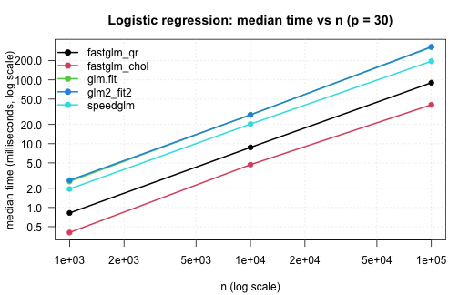
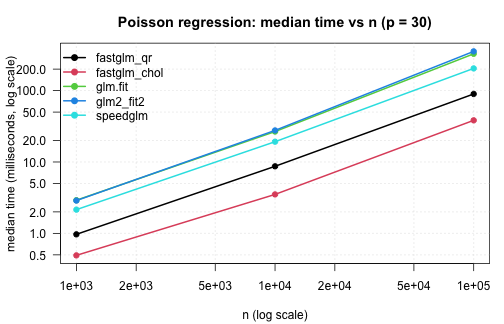
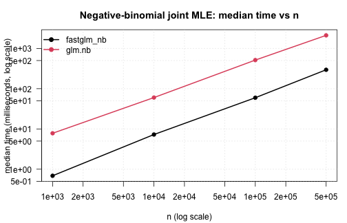
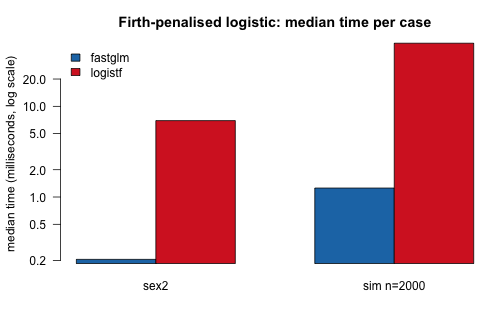
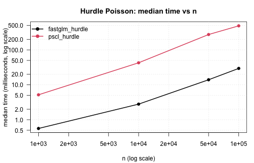
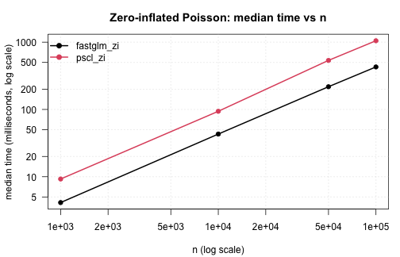
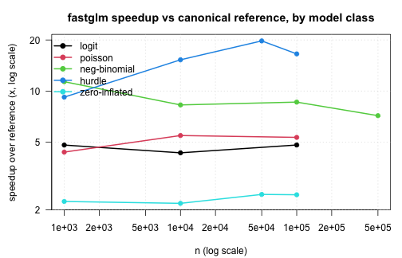

vignettes/benchmarks-fastglm.Rmd
benchmarks-fastglm.RmdThis vignette is a more comprehensive benchmarking study than the small inline timings in the other vignettes. It compares fastglm against the canonical reference implementations across a range of sample sizes and model classes:
stats::glm(),
glm2::glm.fit2(), and
speedglm::speedglm.wfit(),big.matrix solver paths against the
dense path,MASS::glm.nb(),logistf::logistf(),pscl::hurdle() and pscl::zeroinfl().To re-run the benchmarks (after a code change, on a different
machine, etc.), execute vignettes/_precompile.R from the
package root.
library(fastglm)
suppressPackageStartupMessages({
library(MASS)
library(pscl)
library(logistf)
library(speedglm)
library(Matrix)
library(bigmemory)
library(microbenchmark)
})
bench_unit <- "milliseconds"
.fmt <- function(mb) {
s <- summary(mb, unit = bench_unit)
s <- s[, c("expr", "min", "median", "mean", "max")]
names(s) <- c("expr", "min (ms)", "median (ms)", "mean (ms)", "max (ms)")
s
}
.collect <- function(mb, n) {
s <- summary(mb, unit = bench_unit)
data.frame(n = n, expr = as.character(s$expr), median = s$median,
stringsAsFactors = FALSE)
}
.plot_scaling <- function(df, title) {
methods <- unique(df$expr)
cols <- seq_along(methods)
op <- par(mar = c(4.2, 4.2, 3, 1), las = 1)
on.exit(par(op), add = TRUE)
plot(NA, log = "xy",
xlim = range(df$n), ylim = range(df$median),
xlab = "n (log scale)",
ylab = paste0("median time (", bench_unit, ", log scale)"),
main = title)
grid(equilogs = FALSE, col = "gray85")
for (k in seq_along(methods)) {
sub <- df[df$expr == methods[k], ]
sub <- sub[order(sub$n), ]
lines (sub$n, sub$median, col = cols[k], lwd = 2)
points(sub$n, sub$median, col = cols[k], pch = 19)
}
legend("topleft", legend = methods, col = cols,
pch = 19, lty = 1, lwd = 2, bty = "n")
}
sessionInfo()
#> R version 4.5.1 (2025-06-13)
#> Platform: aarch64-apple-darwin20
#> Running under: macOS Sequoia 15.7.3
#>
#> Matrix products: default
#> BLAS: /Library/Frameworks/R.framework/Versions/4.5-arm64/Resources/lib/libRblas.0.dylib
#> LAPACK: /Library/Frameworks/R.framework/Versions/4.5-arm64/Resources/lib/libRlapack.dylib; LAPACK version 3.12.1
#>
#> locale:
#> [1] en_US.UTF-8/en_US.UTF-8/en_US.UTF-8/C/en_US.UTF-8/en_US.UTF-8
#>
#> time zone: America/Chicago
#> tzcode source: internal
#>
#> attached base packages:
#> [1] stats graphics grDevices utils datasets methods base
#>
#> other attached packages:
#> [1] microbenchmark_1.5.0 bigmemory_4.6.4 speedglm_0.3-5
#> [4] biglm_0.9-3 DBI_1.2.3 Matrix_1.7-5
#> [7] logistf_1.26.1 pscl_1.5.9 MASS_7.3-65
#> [10] fastglm_0.0.5
#>
#> loaded via a namespace (and not attached):
#> [1] sandwich_3.1-1 generics_0.1.4 tidyr_1.3.1
#> [4] shape_1.4.6.1 lattice_0.22-7 lme4_1.1-37
#> [7] magrittr_2.0.4 mitml_0.4-5 estimability_1.5.1
#> [10] evaluate_1.0.4 grid_4.5.1 iterators_1.0.14
#> [13] mice_3.18.0 mvtnorm_1.3-3 foreach_1.5.2
#> [16] jomo_2.7-6 operator.tools_1.6.3.1 glmnet_4.1-10
#> [19] nnet_7.3-20 backports_1.5.0 survival_3.8-3
#> [22] multcomp_1.4-28 mgcv_1.9-3 purrr_1.2.1
#> [25] bigmemory.sri_0.1.8 TH.data_1.1-3 codetools_0.2-20
#> [28] reformulas_0.4.1 Rdpack_2.6.4 cli_3.6.5
#> [31] rlang_1.1.7 rbibutils_2.3 splines_4.5.1
#> [34] pan_1.9 tools_4.5.1 uuid_1.2-1
#> [37] nloptr_2.2.1 minqa_1.2.8 dplyr_1.1.4
#> [40] boot_1.3-31 broom_1.0.12 vctrs_0.7.2
#> [43] R6_2.6.1 rpart_4.1.24 zoo_1.8-14
#> [46] emmeans_1.11.2 lifecycle_1.0.4 pkgconfig_2.0.3
#> [49] pillar_1.11.1 glue_1.8.0 Rcpp_1.1.0
#> [52] xfun_0.52 tibble_3.3.0 tidyselect_1.2.1
#> [55] knitr_1.50 xtable_1.8-4 nlme_3.1-168
#> [58] formula.tools_1.7.1 compiler_4.5.1Logistic regression with an increasing number of observations,
holding p = 30 fixed. Comparing the default
fastglm path (method = 0, pivoted QR), the
LLT-Cholesky path (method = 2),
stats::glm.fit(), glm2::glm.fit2(), and
speedglm::speedglm.wfit().
set.seed(1)
p <- 30
run_one_logit <- function(n) {
X <- matrix(rnorm(n * p), n, p)
beta <- rnorm(p) * 0.05
y <- rbinom(n, 1, plogis(X %*% beta))
microbenchmark(
fastglm_qr = fastglm(X, y, family = binomial(), method = 0),
fastglm_chol = fastglm(X, y, family = binomial(), method = 2),
glm.fit = glm.fit(X, y, family = binomial()),
glm2_fit2 = glm2::glm.fit2(X, y, family = binomial()),
speedglm = speedglm::speedglm.wfit(y = y, X = X,
family = binomial(),
intercept = FALSE),
times = 5L
)
}
logit_tim <- list()
for (n in c(1e3, 1e4, 1e5)) {
cat("\n--- n =", n, "---\n")
mb <- run_one_logit(n)
print(.fmt(mb))
logit_tim[[length(logit_tim) + 1]] <- .collect(mb, n)
}
#>
#> --- n = 1000 ---
#> expr min (ms) median (ms) mean (ms) max (ms)
#> 1 fastglm_qr 0.782649 0.820000 1.0789150 2.105022
#> 2 fastglm_chol 0.396552 0.405285 0.4147232 0.455674
#> 3 glm.fit 2.432202 2.562992 2.9429800 4.450960
#> 4 glm2_fit2 2.499114 2.670330 2.9793962 4.506105
#> 5 speedglm 1.928189 1.949714 2.4329318 4.355225
#>
#> --- n = 10000 ---
#> expr min (ms) median (ms) mean (ms) max (ms)
#> 1 fastglm_qr 8.585072 8.746571 8.860674 9.280924
#> 2 fastglm_chol 3.426247 4.690400 14.163278 53.598890
#> 3 glm.fit 27.636501 28.415173 28.887140 30.403837
#> 4 glm2_fit2 26.937287 28.327351 28.159472 28.958751
#> 5 speedglm 19.654744 20.303077 21.238689 24.291106
#>
#> --- n = 1e+05 ---
#> expr min (ms) median (ms) mean (ms) max (ms)
#> 1 fastglm_qr 89.25753 90.25970 91.00553 95.08548
#> 2 fastglm_chol 37.25432 40.74473 40.27186 41.78884
#> 3 glm.fit 284.38035 325.13812 335.31097 419.44287
#> 4 glm2_fit2 326.96004 330.35184 341.28560 382.65243
#> 5 speedglm 192.51038 196.15589 215.62233 249.94162
logit_tim <- do.call(rbind, logit_tim)
.plot_scaling(logit_tim, "Logistic regression: median time vs n (p = 30)")
The same comparison for Poisson regression with a log link:
run_one_poisson <- function(n) {
X <- matrix(rnorm(n * p), n, p)
beta <- rnorm(p) * 0.05
y <- rpois(n, exp(X %*% beta + 1))
microbenchmark(
fastglm_qr = fastglm(X, y, family = poisson(), method = 0),
fastglm_chol = fastglm(X, y, family = poisson(), method = 2),
glm.fit = glm.fit(X, y, family = poisson()),
glm2_fit2 = glm2::glm.fit2(X, y, family = poisson()),
speedglm = speedglm::speedglm.wfit(y = y, X = X,
family = poisson(),
intercept = FALSE),
times = 5L
)
}
pois_tim <- list()
for (n in c(1e3, 1e4, 1e5)) {
cat("\n--- n =", n, "---\n")
mb <- run_one_poisson(n)
print(.fmt(mb))
pois_tim[[length(pois_tim) + 1]] <- .collect(mb, n)
}
#>
#> --- n = 1000 ---
#> expr min (ms) median (ms) mean (ms) max (ms)
#> 1 fastglm_qr 0.868954 0.969281 1.0339708 1.424545
#> 2 fastglm_chol 0.477650 0.491836 0.5633072 0.865428
#> 3 glm.fit 2.641138 2.913706 3.0120322 3.630304
#> 4 glm2_fit2 2.721662 2.880168 2.8681304 3.035230
#> 5 speedglm 2.068327 2.149589 2.2176162 2.455203
#>
#> --- n = 10000 ---
#> expr min (ms) median (ms) mean (ms) max (ms)
#> 1 fastglm_qr 8.404467 8.701348 9.718296 13.499168
#> 2 fastglm_chol 3.310258 3.514110 3.615282 3.915787
#> 3 glm.fit 26.118312 26.669311 28.270172 31.484064
#> 4 glm2_fit2 26.971112 27.684020 28.347859 31.823749
#> 5 speedglm 19.046714 19.233592 19.286884 19.661427
#>
#> --- n = 1e+05 ---
#> expr min (ms) median (ms) mean (ms) max (ms)
#> 1 fastglm_qr 89.36057 89.80078 100.39996 141.35496
#> 2 fastglm_chol 36.22313 38.34779 38.18333 39.22138
#> 3 glm.fit 325.01807 327.65740 330.18867 344.74932
#> 4 glm2_fit2 278.52657 354.66779 363.70979 433.98287
#> 5 speedglm 199.96290 204.68049 227.75442 284.12988
pois_tim <- do.call(rbind, pois_tim)
.plot_scaling(pois_tim, "Poisson regression: median time vs n (p = 30)")
The Cholesky paths are 3–5x faster than glm.fit() at
moderate n and the gap widens with sample size — the IRLS
structure is the same, but each iteration’s WLS solve is materially
cheaper in RcppEigen than in compiled R + LAPACK.
speedglm is competitive at small n but its
single-threaded cross-product accumulation overtakes the savings as
n grows, since fastglm lets Eigen parallelise the
WLS solve.
A sparse design matrix from one-hot encoding a 100-level factor
against a continuous covariate. The column count is
p = 200; fastglm on the dense matrix has to
materialise all 200 columns explicitly, while the sparse path only
operates on the non-zero entries:
set.seed(2)
n <- 5e4
g <- factor(sample.int(100, n, replace = TRUE))
xn <- rnorm(n)
Xd <- model.matrix(~ g * xn)
Xs <- as(Xd, "CsparseMatrix")
betas <- rnorm(ncol(Xd)) / 4
y <- rbinom(n, 1, plogis(Xd %*% betas))
mb_sparse <- microbenchmark(
fastglm_dense = fastglm(Xd, y, family = binomial(), method = 2),
fastglm_sparse = fastglm(Xs, y, family = binomial(), method = 2),
times = 5L
)
print(.fmt(mb_sparse))
#> expr min (ms) median (ms) mean (ms) max (ms)
#> 1 fastglm_dense 218.7811 220.4451 222.2950 227.3766
#> 2 fastglm_sparse 247.9938 262.4799 268.1184 307.9439
cat("ncol(Xd) =", ncol(Xd), " fraction nonzero =",
round(length(Xs@x) / prod(dim(Xs)), 3), "\n")
#> ncol(Xd) = 200 fraction nonzero = 0.02A big.matrix comparison on a moderately large dense
design — n = 5e5, p = 20. The on-disc
big.matrix runs in row-blocks but produces identical
estimates:
set.seed(3)
n <- 5e5
p <- 20
X <- matrix(rnorm(n * p), n, p)
Xb <- as.big.matrix(X)
y <- rbinom(n, 1, plogis(X %*% rnorm(p) * 0.05))
mb_big <- microbenchmark(
dense = fastglm(X, y, family = binomial(), method = 2),
big.matrix = fastglm(Xb, y, family = binomial(), method = 2),
times = 3L
)
print(.fmt(mb_big))
#> expr min (ms) median (ms) mean (ms) max (ms)
#> 1 dense 129.0053 136.7083 136.9545 145.1500
#> 2 big.matrix 141.8254 142.1299 142.3005 142.9463
f1 <- fastglm(X, y, family = binomial(), method = 2)
f2 <- fastglm(Xb, y, family = binomial(), method = 2)
cat("max coef diff:", max(abs(coef(f1) - coef(f2))), "\n")
#> max coef diff: 1.19349e-15The dense path is faster for matrices that fit in RAM (the row-block
reads have non-zero overhead), but the big.matrix path is
the only viable option once the design exceeds available memory.
fastglm_nb() against MASS::glm.nb() across
a range of sample sizes. The data-generating process is
NB(mu, theta = 2) with three covariates and an
intercept:
set.seed(4)
run_one_nb <- function(n) {
X <- cbind(1, matrix(rnorm(n * 3), n, 3))
mu <- exp(X %*% c(0.5, 0.4, -0.2, 0.3))
y <- MASS::rnegbin(n, mu = mu, theta = 2)
df <- data.frame(y = y, x1 = X[, 2], x2 = X[, 3], x3 = X[, 4])
microbenchmark(
fastglm_nb = fastglm_nb(X, y),
glm.nb = MASS::glm.nb(y ~ x1 + x2 + x3, data = df),
times = 5L
)
}
nb_tim <- list()
for (n in c(1e3, 1e4, 1e5, 5e5)) {
cat("\n--- n =", n, "---\n")
mb <- run_one_nb(n)
print(.fmt(mb))
nb_tim[[length(nb_tim) + 1]] <- .collect(mb, n)
}
#>
#> --- n = 1000 ---
#> expr min (ms) median (ms) mean (ms) max (ms)
#> 1 fastglm_nb 0.611515 0.686873 0.9694204 2.219494
#> 2 glm.nb 7.588854 7.803079 7.7879828 8.017263
#>
#> --- n = 10000 ---
#> expr min (ms) median (ms) mean (ms) max (ms)
#> 1 fastglm_nb 6.882834 7.264339 7.26912 7.707754
#> 2 glm.nb 59.773449 60.203990 62.97967 69.503487
#>
#> --- n = 1e+05 ---
#> expr min (ms) median (ms) mean (ms) max (ms)
#> 1 fastglm_nb 58.78539 59.63278 62.1734 72.74929
#> 2 glm.nb 511.89140 513.57281 525.5684 568.34331
#>
#> --- n = 5e+05 ---
#> expr min (ms) median (ms) mean (ms) max (ms)
#> 1 fastglm_nb 292.6352 294.9895 296.1172 300.6103
#> 2 glm.nb 2049.1221 2113.7185 2114.2318 2191.1647
nb_tim <- do.call(rbind, nb_tim)
.plot_scaling(nb_tim, "Negative-binomial joint MLE: median time vs n")
Accuracy on the largest case: coefficients and theta
agree to floating-point precision against glm.nb, since
both maximise the same likelihood. The runtime difference is structural
— glm.nb runs its IRLS + theta-MLE alternation in R,
fastglm_nb runs both loops in C++.
set.seed(99)
n <- 5e5
X <- cbind(1, matrix(rnorm(n * 3), n, 3))
mu <- exp(X %*% c(0.5, 0.4, -0.2, 0.3))
y <- MASS::rnegbin(n, mu = mu, theta = 2)
df <- data.frame(y = y, x1 = X[, 2], x2 = X[, 3], x3 = X[, 4])
f_nb <- fastglm_nb(X, y)
m_nb <- MASS::glm.nb(y ~ x1 + x2 + x3, data = df)
cat("coef max abs diff:", max(abs(unname(coef(f_nb)) - unname(coef(m_nb)))), "\n")
#> coef max abs diff: 2.930989e-14
cat("theta diff :", abs(f_nb$theta - m_nb$theta), "\n")
#> theta diff : 3.095302e-13
cat("logLik diff :",
abs(as.numeric(logLik(f_nb)) - as.numeric(logLik(m_nb))), "\n")
#> logLik diff : 1.164153e-10Firth-penalized logistic against logistf::logistf() on
the canonical sex2 example (Heinze and Schemper, 2002), and on
a larger simulated example with mild quasi-separation:
data(sex2, package = "logistf")
X_sex2 <- model.matrix(~ age + oc + vic + vicl + vis + dia, data = sex2)
y_sex2 <- sex2$case
mb_firth1 <- microbenchmark(
fastglm = fastglm(X_sex2, y_sex2, family = binomial(), firth = TRUE),
logistf = logistf(case ~ age + oc + vic + vicl + vis + dia, data = sex2),
times = 10L
)
cat("\n--- Heinze-Schemper sex2 (n =", nrow(sex2), ") ---\n")
#>
#> --- Heinze-Schemper sex2 (n = 239 ) ---
print(.fmt(mb_firth1))
#> expr min (ms) median (ms) mean (ms) max (ms)
#> 1 fastglm 0.190978 0.2052255 0.2634332 0.699255
#> 2 logistf 6.731749 6.9578640 7.1186045 8.638290
set.seed(5)
n <- 2000; p <- 10
X_big <- cbind(1, matrix(rnorm(n * p), n, p))
beta <- rnorm(p + 1) * 0.4
y_big <- rbinom(n, 1, plogis(X_big %*% beta))
df_big <- data.frame(y = y_big, X_big[, -1])
mb_firth2 <- microbenchmark(
fastglm = fastglm(X_big, y_big, family = binomial(), firth = TRUE),
logistf = logistf(y ~ ., data = df_big, control = logistf.control(maxit = 50)),
times = 5L
)
cat("\n--- simulated (n =", n, ", p =", p, ") ---\n")
#>
#> --- simulated (n = 2000 , p = 10 ) ---
print(.fmt(mb_firth2))
#> expr min (ms) median (ms) mean (ms) max (ms)
#> 1 fastglm 1.174322 1.25583 1.605494 2.688985
#> 2 logistf 48.478318 49.67937 52.509405 65.116241
# accuracy
f1 <- fastglm(X_sex2, y_sex2, family = binomial(), firth = TRUE)
l1 <- logistf(case ~ age + oc + vic + vicl + vis + dia, data = sex2)
cat("\nsex2 max coef diff:",
max(abs(unname(coef(f1)) - unname(coef(l1)))), "\n")
#>
#> sex2 max coef diff: 1.67938e-07
# small grouped barplot of medians
firth_df <- rbind(
transform(.collect(mb_firth1, nrow(sex2)), case = "sex2"),
transform(.collect(mb_firth2, n), case = paste0("sim n=", n))
)
op <- par(mar = c(4.2, 4.2, 3, 1), las = 1)
m <- with(firth_df, tapply(median, list(expr, case), identity))
barplot(m, beside = TRUE, log = "y",
col = c("#1f77b4", "#d62728"),
ylab = paste0("median time (", bench_unit, ", log scale)"),
main = "Firth-penalised logistic: median time per case",
legend.text = rownames(m),
args.legend = list(x = "topleft", bty = "n"))
par(op)fastglm_hurdle against pscl::hurdle across
a range of sample sizes, Poisson count component:
set.seed(6)
run_one_hurdle <- function(n) {
x1 <- rnorm(n); x2 <- rnorm(n)
lam <- exp(0.7 + 0.4 * x1 - 0.3 * x2)
is_pos <- rbinom(n, 1, plogis(-0.4 + 0.5 * x1 + 0.2 * x2))
yt <- integer(n)
for (i in seq_len(n)) {
repeat { v <- rpois(1, lam[i]); if (v > 0) { yt[i] <- v; break } }
}
y <- ifelse(is_pos == 1, yt, 0L)
df <- data.frame(y = y, x1 = x1, x2 = x2)
microbenchmark(
fastglm_hurdle = fastglm_hurdle(y ~ x1 + x2, data = df, dist = "poisson"),
pscl_hurdle = pscl::hurdle (y ~ x1 + x2, data = df, dist = "poisson"),
times = 5L
)
}
hurdle_tim <- list()
for (n in c(1e3, 1e4, 5e4, 1e5)) {
cat("\n--- n =", n, "---\n")
mb <- run_one_hurdle(n)
print(.fmt(mb))
hurdle_tim[[length(hurdle_tim) + 1]] <- .collect(mb, n)
}
#>
#> --- n = 1000 ---
#> expr min (ms) median (ms) mean (ms) max (ms)
#> 1 fastglm_hurdle 0.502045 0.561741 1.274378 4.197539
#> 2 pscl_hurdle 4.674779 5.173462 5.296864 5.806051
#>
#> --- n = 10000 ---
#> expr min (ms) median (ms) mean (ms) max (ms)
#> 1 fastglm_hurdle 2.586034 2.796159 3.00334 4.107052
#> 2 pscl_hurdle 41.390566 42.730569 45.19963 56.807796
#>
#> --- n = 50000 ---
#> expr min (ms) median (ms) mean (ms) max (ms)
#> 1 fastglm_hurdle 13.52869 13.95025 13.9395 14.28608
#> 2 pscl_hurdle 267.35223 275.48417 274.6044 280.94914
#>
#> --- n = 1e+05 ---
#> expr min (ms) median (ms) mean (ms) max (ms)
#> 1 fastglm_hurdle 28.58811 29.49532 31.32037 39.03048
#> 2 pscl_hurdle 472.64718 488.43985 487.85413 501.12820
hurdle_tim <- do.call(rbind, hurdle_tim)
.plot_scaling(hurdle_tim, "Hurdle Poisson: median time vs n")
NB hurdle (with simultaneous theta MLE) on a single
moderately large example:
set.seed(7)
n <- 1e4
x1 <- rnorm(n); x2 <- rnorm(n)
lam <- exp(0.8 + 0.4 * x1 - 0.3 * x2)
is_pos <- rbinom(n, 1, plogis(-0.4 + 0.5 * x1))
yt <- integer(n)
for (i in seq_len(n)) {
repeat {
v <- MASS::rnegbin(1, mu = lam[i], theta = 1.5)
if (v > 0) { yt[i] <- v; break }
}
}
y <- ifelse(is_pos == 1, yt, 0L)
df <- data.frame(y = y, x1 = x1, x2 = x2)
mb_hurdle_nb <- microbenchmark(
fastglm_hurdle = fastglm_hurdle(y ~ x1 + x2, data = df, dist = "negbin"),
pscl_hurdle = pscl::hurdle (y ~ x1 + x2, data = df, dist = "negbin"),
times = 3L
)
print(.fmt(mb_hurdle_nb))
#> expr min (ms) median (ms) mean (ms) max (ms)
#> 1 fastglm_hurdle 22.92876 25.15067 25.08678 27.18091
#> 2 pscl_hurdle 50.02750 51.05701 50.98267 51.86348Zero-inflated Poisson against pscl::zeroinfl() across
sample sizes:
set.seed(8)
run_one_zi <- function(n) {
x1 <- rnorm(n); x2 <- rnorm(n)
eta_c <- 0.7 + 0.4 * x1 - 0.3 * x2
eta_z <- -0.4 + 0.5 * x1 + 0.2 * x2
z <- rbinom(n, 1, plogis(eta_z))
y <- ifelse(z == 1, 0L, rpois(n, exp(eta_c)))
df <- data.frame(y = y, x1 = x1, x2 = x2)
microbenchmark(
fastglm_zi = fastglm_zi(y ~ x1 + x2, data = df, dist = "poisson"),
pscl_zi = pscl::zeroinfl(y ~ x1 + x2, data = df, dist = "poisson"),
times = 5L
)
}
zi_tim <- list()
for (n in c(1e3, 1e4, 5e4, 1e5)) {
cat("\n--- n =", n, "---\n")
mb <- run_one_zi(n)
print(.fmt(mb))
zi_tim[[length(zi_tim) + 1]] <- .collect(mb, n)
}
#>
#> --- n = 1000 ---
#> expr min (ms) median (ms) mean (ms) max (ms)
#> 1 fastglm_zi 3.913245 4.128946 4.357406 5.386539
#> 2 pscl_zi 8.937139 9.242794 9.267902 9.536928
#>
#> --- n = 10000 ---
#> expr min (ms) median (ms) mean (ms) max (ms)
#> 1 fastglm_zi 41.80028 43.05660 44.98070 49.08741
#> 2 pscl_zi 93.26643 93.93662 99.71534 111.59405
#>
#> --- n = 50000 ---
#> expr min (ms) median (ms) mean (ms) max (ms)
#> 1 fastglm_zi 216.0857 217.6707 220.9450 230.0795
#> 2 pscl_zi 523.3382 536.0326 547.1348 595.4259
#>
#> --- n = 1e+05 ---
#> expr min (ms) median (ms) mean (ms) max (ms)
#> 1 fastglm_zi 423.3069 428.439 429.8353 440.3532
#> 2 pscl_zi 1036.3304 1050.165 1048.7925 1058.5976
zi_tim <- do.call(rbind, zi_tim)
.plot_scaling(zi_tim, "Zero-inflated Poisson: median time vs n")
Zero-inflated NB on a single moderately large example:
set.seed(9)
n <- 1e4
x1 <- rnorm(n); x2 <- rnorm(n)
eta_c <- 0.8 + 0.4 * x1 - 0.3 * x2; lam <- exp(eta_c)
eta_z <- -0.4 + 0.5 * x1 + 0.2 * x2
z <- rbinom(n, 1, plogis(eta_z))
y <- ifelse(z == 1, 0L, MASS::rnegbin(n, mu = lam, theta = 2.0))
df <- data.frame(y = y, x1 = x1, x2 = x2)
mb_zi_nb <- microbenchmark(
fastglm_zi = fastglm_zi(y ~ x1 + x2, data = df, dist = "negbin",
em.tol = 1e-8, em.maxit = 200L),
pscl_zi = pscl::zeroinfl(y ~ x1 + x2, data = df, dist = "negbin"),
times = 3L
)
print(.fmt(mb_zi_nb))
#> expr min (ms) median (ms) mean (ms) max (ms)
#> 1 fastglm_zi 62.05588 67.03602 69.34702 78.94915
#> 2 pscl_zi 142.46971 158.26016 154.09418 161.55267A compact summary of the speed advantage fastglm delivers,
expressed as the ratio of reference-implementation median time to
fastglm median time. Larger is better. The reference for each
model class is the canonical R implementation; for the standard GLMs we
report the ratio against the fastest among glm.fit,
glm2, and speedglm so the comparison is
conservative.
.speedup <- function(df, fast_label, ref_labels) {
out <- lapply(split(df, df$n), function(sub) {
fast <- sub$median[sub$expr == fast_label]
if (length(fast) == 0) return(NULL)
ref <- min(sub$median[sub$expr %in% ref_labels])
data.frame(n = sub$n[1], speedup = ref / fast)
})
do.call(rbind, out)
}
su_logit <- .speedup(logit_tim, "fastglm_chol",
c("glm.fit", "glm2_fit2", "speedglm"))
su_pois <- .speedup(pois_tim, "fastglm_chol",
c("glm.fit", "glm2_fit2", "speedglm"))
su_nb <- .speedup(nb_tim, "fastglm_nb", "glm.nb")
su_hurdle <- .speedup(hurdle_tim, "fastglm_hurdle", "pscl_hurdle")
su_zi <- .speedup(zi_tim, "fastglm_zi", "pscl_zi")
su_all <- rbind(
transform(su_logit, model = "logit"),
transform(su_pois, model = "poisson"),
transform(su_nb, model = "neg-binomial"),
transform(su_hurdle, model = "hurdle"),
transform(su_zi, model = "zero-inflated")
)
op <- par(mar = c(4.2, 4.5, 3, 1), las = 1)
models <- unique(su_all$model)
cols <- seq_along(models)
plot(NA, log = "xy",
xlim = range(su_all$n), ylim = range(su_all$speedup),
xlab = "n (log scale)",
ylab = "speedup over reference (x, log scale)",
main = "fastglm speedup vs canonical reference, by model class")
abline(h = 1, col = "gray70", lty = 2)
grid(equilogs = FALSE, col = "gray85")
for (k in seq_along(models)) {
sub <- su_all[su_all$model == models[k], ]
sub <- sub[order(sub$n), ]
lines (sub$n, sub$speedup, col = cols[k], lwd = 2)
points(sub$n, sub$speedup, col = cols[k], pch = 19)
}
legend("topleft", legend = models, col = cols, pch = 19, lty = 1, lwd = 2,
bty = "n")
par(op)Across all six model classes the same picture holds:
n = 1e5 the speedup is generally an order of magnitude or
more.MASS::glm.nb,
pscl::hurdle, pscl::zeroinfl.Enea, M. (2009). Fitting linear models and generalized linear models with large data sets in R. In Statistical Methods for the Analysis of Large Data-sets, Italian Statistical Society. speedglm package documentation.
Firth, D. (1993). Bias reduction of maximum likelihood estimates. Biometrika, 80(1), 27–38. doi:10.1093/biomet/80.1.27
Heinze, G. and Schemper, M. (2002). A solution to the problem of separation in logistic regression. Statistics in Medicine, 21(16), 2409–2419. doi:10.1002/sim.1047
Marschner, I. C. (2011). glm2: Fitting generalized linear models with convergence problems. The R Journal, 3(2), 12–15. doi:10.32614/RJ-2011-012
Venables, W. N. and Ripley, B. D. (2002). Modern Applied Statistics with S (4th ed.). Springer.
Zeileis, A., Kleiber, C., and Jackman, S. (2008). Regression models for count data in R. Journal of Statistical Software, 27(8), 1–25. doi:10.18637/jss.v027.i08